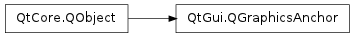

QGraphicsAnchor ¶

Note
This class was introduced in Qt 4.6
Synopsis ¶
Functions ¶
- def setSizePolicy (policy)
- def setSpacing (spacing)
- def sizePolicy ()
- def spacing ()
- def unsetSpacing ()
Detailed Description ¶
The PySide.QtGui.QGraphicsAnchor class represents an anchor between two items in a PySide.QtGui.QGraphicsAnchorLayout .
The graphics anchor provides an API that enables you to query and manipulate the properties an anchor has. When an anchor is added to the layout with QGraphicsAnchorLayout.addAnchor() , a PySide.QtGui.QGraphicsAnchor instance is returned where the properties are initialized to their default values. The properties can then be further changed, and they will be picked up the next time the layout is activated.
See also
- PySide.QtGui.QGraphicsAnchor. setSizePolicy ( policy ) ¶
-
Parameters: policy – PySide.QtGui.QSizePolicy.Policy This property holds the size policy for the PySide.QtGui.QGraphicsAnchor ..
By setting the size policy on an anchor you can configure how the anchor can resize itself from its preferred spacing. For instance, if the anchor has the size policy QSizePolicy.Minimum , the spacing is the minimum size of the anchor. However, its size can grow up to the anchors maximum size. If the default size policy is QSizePolicy.Fixed , the anchor can neither grow or shrink, which means that the only size the anchor can have is the spacing. QSizePolicy.Fixed is the default size policy. PySide.QtGui.QGraphicsAnchor always has a minimum spacing of 0 and a very large maximum spacing.
See also
- PySide.QtGui.QGraphicsAnchor. setSpacing ( spacing ) ¶
-
Parameters: spacing – PySide.QtCore.qreal This property holds the preferred space between items in the PySide.QtGui.QGraphicsAnchorLayout ..
Depending on the anchor type, the default spacing is either 0 or a value returned from the style.
See also
- PySide.QtGui.QGraphicsAnchor. sizePolicy ( ) ¶
-
Return type: PySide.QtGui.QSizePolicy.Policy This property holds the size policy for the PySide.QtGui.QGraphicsAnchor ..
By setting the size policy on an anchor you can configure how the anchor can resize itself from its preferred spacing. For instance, if the anchor has the size policy QSizePolicy.Minimum , the spacing is the minimum size of the anchor. However, its size can grow up to the anchors maximum size. If the default size policy is QSizePolicy.Fixed , the anchor can neither grow or shrink, which means that the only size the anchor can have is the spacing. QSizePolicy.Fixed is the default size policy. PySide.QtGui.QGraphicsAnchor always has a minimum spacing of 0 and a very large maximum spacing.
See also
- PySide.QtGui.QGraphicsAnchor. spacing ( ) ¶
-
Return type: PySide.QtCore.qreal This property holds the preferred space between items in the PySide.QtGui.QGraphicsAnchorLayout ..
Depending on the anchor type, the default spacing is either 0 or a value returned from the style.
See also
- PySide.QtGui.QGraphicsAnchor. unsetSpacing ( ) ¶
-
This property holds the preferred space between items in the PySide.QtGui.QGraphicsAnchorLayout ..
Depending on the anchor type, the default spacing is either 0 or a value returned from the style.
See also